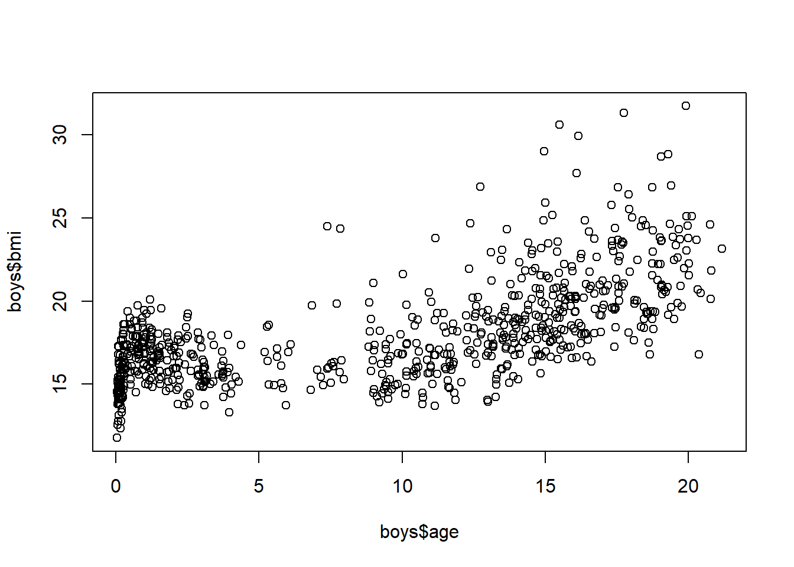
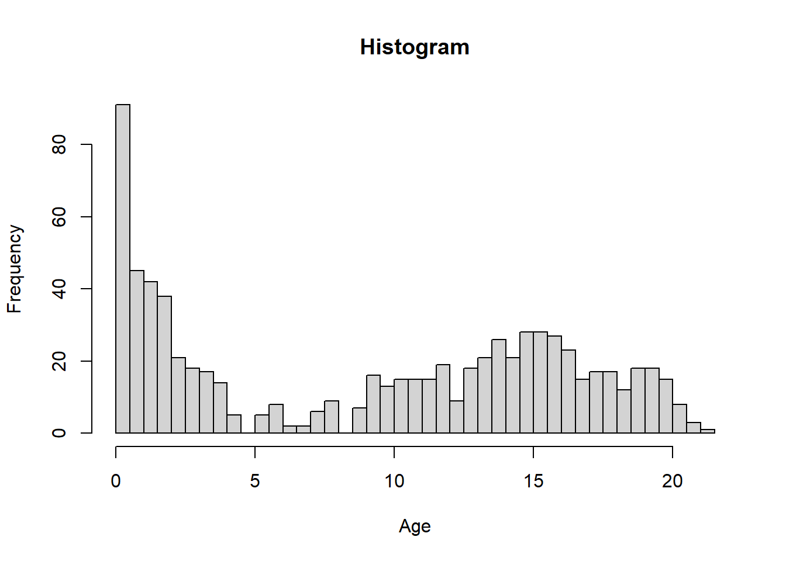
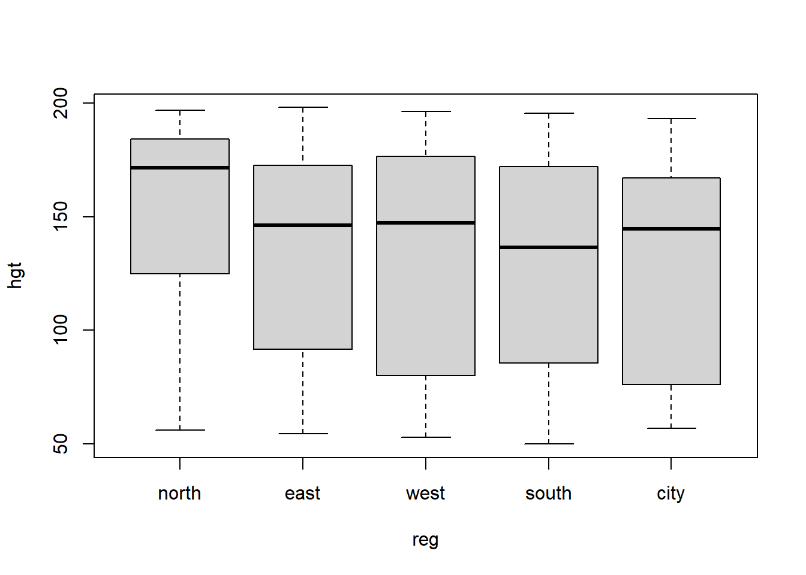
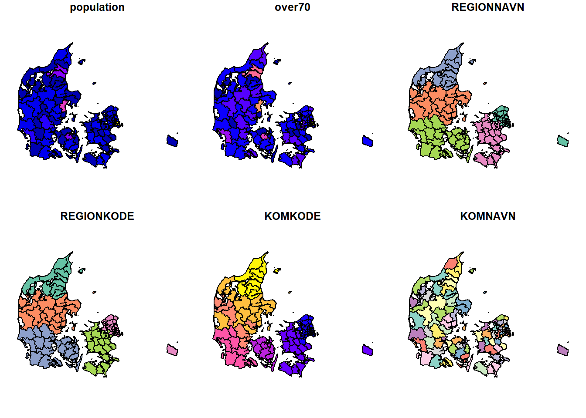
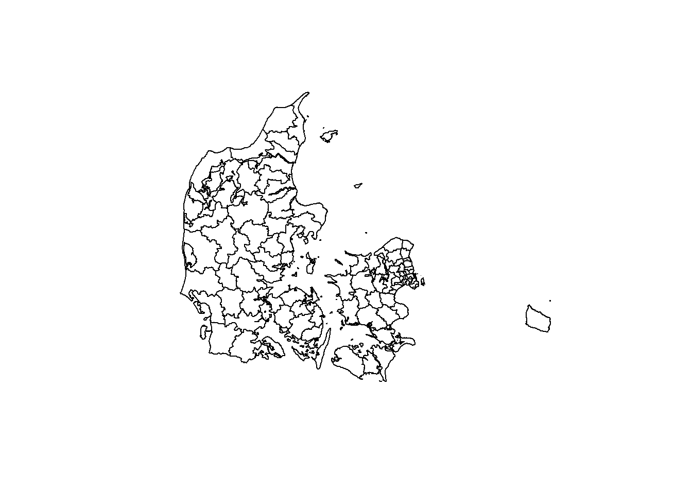
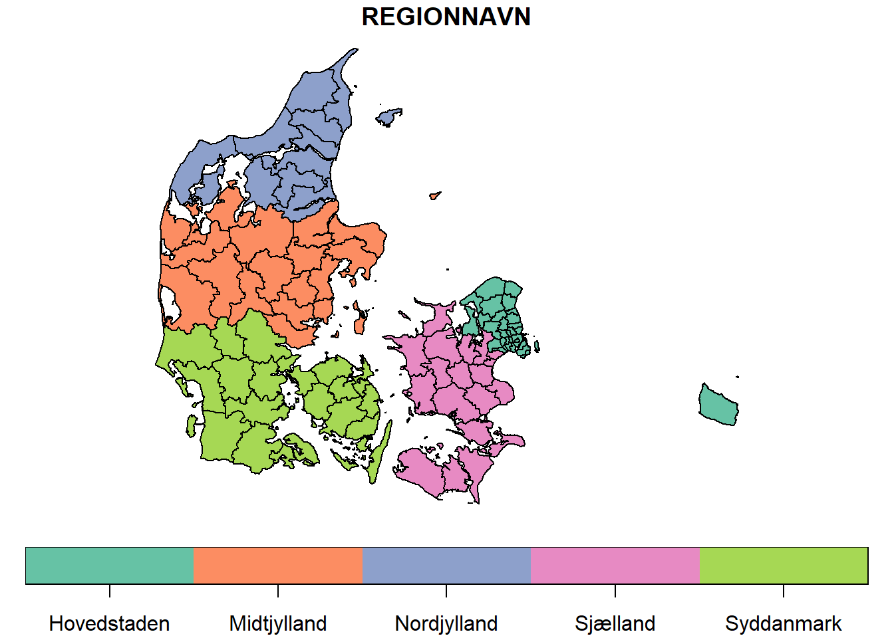
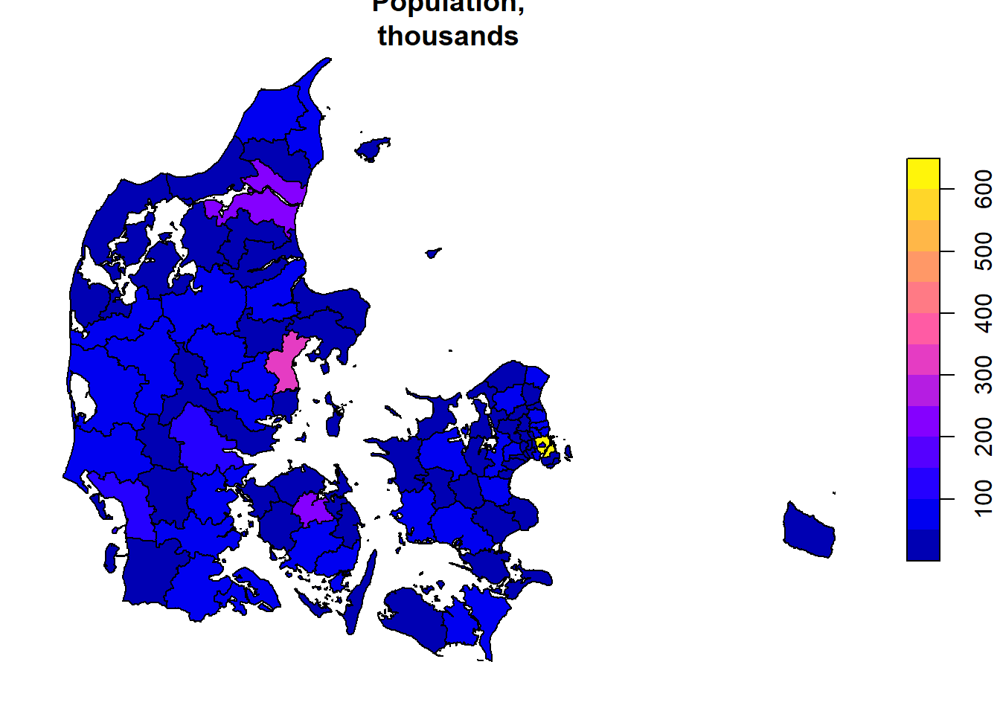
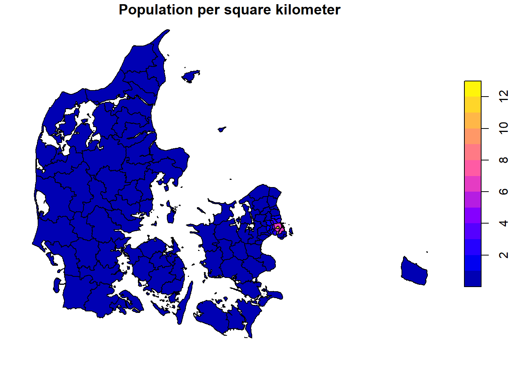

Practical E - solutions
Statistical Programming in R
Exercises
The following packages are required for this practical:
library(dplyr)
library(magrittr)
library(mice)
library(ggplot2)
library(stringr)and if you’d like the same results as I have obtained, you can fix the random seed
set.seed(123)- Function
plot()is the core plotting function inR. Find out more aboutplot(): Try both the help in the help-pane and?plotin the console. Look at the examples by runningexample(plot).
The help tells you all about a functions arguments (the input you can specify), as well as the element the function returns to the Global Environment. There are strict rules for publishing packages in R. For your packages to appear on the Comprehensive R Archive Network (CRAN), a rigorous series of checks have to be passed. As a result, all user-level components (functions, datasets, elements) that are published, have an acompanying documentation that elaborates how the function should be used, what can be expected, or what type of information a data set contains. Help files often contain example code that can be run to demonstrate the workings.
?plot## starting httpd help server ... doneexample(plot)##
## plot> Speed <- cars$speed
##
## plot> Distance <- cars$dist
##
## plot> plot(Speed, Distance, panel.first = grid(8, 8),
## plot+ pch = 0, cex = 1.2, col = "blue")
##
## plot> plot(Speed, Distance,
## plot+ panel.first = lines(stats::lowess(Speed, Distance), lty = "dashed"),
## plot+ pch = 0, cex = 1.2, col = "blue")
##
## plot> ## Show the different plot types
## plot> x <- 0:12
##
## plot> y <- sin(pi/5 * x)
##
## plot> op <- par(mfrow = c(3,3), mar = .1+ c(2,2,3,1))
##
## plot> for (tp in c("p","l","b", "c","o","h", "s","S","n")) {
## plot+ plot(y ~ x, type = tp, main = paste0("plot(*, type = \"", tp, "\")"))
## plot+ if(tp == "S") {
## plot+ lines(x, y, type = "s", col = "red", lty = 2)
## plot+ mtext("lines(*, type = \"s\", ...)", col = "red", cex = 0.8)
## plot+ }
## plot+ }
##
## plot> par(op)
##
## plot> ##--- Log-Log Plot with custom axes
## plot> lx <- seq(1, 5, length.out = 41)
##
## plot> yl <- expression(e^{-frac(1,2) * {log[10](x)}^2})
##
## plot> y <- exp(-.5*lx^2)
##
## plot> op <- par(mfrow = c(2,1), mar = par("mar")-c(1,0,2,0), mgp = c(2, .7, 0))
##
## plot> plot(10^lx, y, log = "xy", type = "l", col = "purple",
## plot+ main = "Log-Log plot", ylab = yl, xlab = "x")##
## plot> plot(10^lx, y, log = "xy", type = "o", pch = ".", col = "forestgreen",
## plot+ main = "Log-Log plot with custom axes", ylab = yl, xlab = "x",
## plot+ axes = FALSE, frame.plot = TRUE)
##
## plot> my.at <- 10^(1:5)
##
## plot> axis(1, at = my.at, labels = formatC(my.at, format = "fg"))
##
## plot> e.y <- -5:-1 ; at.y <- 10^e.y
##
## plot> axis(2, at = at.y, col.axis = "red", las = 1,
## plot+ labels = as.expression(lapply(e.y, function(E) bquote(10^.(E)))))
##
## plot> par(op)There are many more functions that can plot specific types of plots.
For example, function hist() plots histograms, but falls
back on the basic plot() function. Packages
lattice and ggplot2 are excellent packages to
use for complex plots. Pretty much any type of plot can be made in R. A
good reference for packages lattice that provides all
R-code can be found at http://lmdvr.r-forge.r-project.org/figures/figures.html.
Alternatively, all ggplot2 documentation can be found at http://docs.ggplot2.org/current/
- Create a scatterplot between
ageandbmiin themice::boysdata set.
With the standard plotting device in R:
plot( boys$bmi ~ boys$age )
- Now recreate the plot with the following specifications:
- If
bmi < 18.5usecolor = "light blue" - If
bmi > 18.5 & bmi < 25usecolor = "light green" - If
bmi > 25 & bmi < 30usecolor = "orange" - If
bmi > 30usecolor = "red"
Hint: it may help to expand the data set with a new variable.
It may be easier to create a new variable that creates the specified
categories. We can use the cut() function to do this
quickly
boys2 <-
boys %>%
mutate(class = cut(bmi, c(0, 18.5, 25, 30, Inf),
labels = c("underweight",
"healthy",
"overweight",
"obese")))by specifying the boundaries of the intervals. In this case we obtain
4 intervals: 0-18.5, 18.5-25,
25-30 and 30-Inf. We used the
%>% pipe to work with bmi directly.
Alternatively, we could have done this without a pipe:
boys3 <- boys
boys3$class <- cut(boys$bmi, c(0, 18.5, 25, 30, Inf),
labels = c("underweight",
"healthy",
"overweight",
"obese"))to obtain the same result.
With the standard plotting device in R we can now
specify:
plot(bmi ~ age, subset = class == "underweight", col = "light blue", data = boys2,
ylim = c(10, 35), xlim = c(0, 25))
points(bmi ~ age, subset = class == "healthy", col = "light green", data = boys2)
points(bmi ~ age, subset = class == "overweight", col = "orange", data = boys2)
points(bmi ~ age, subset = class == "obese", col = "red", data = boys2)
- Create a histogram for
agein theboysdata set.
With the standard plotting device in R:
hist(boys$age, breaks = 50)
The breaks = 50 overrides the default breaks between the
bars. By default the plot would be
hist(boys$age)
The title and axis label need to be fixed:
hist(boys$age, breaks = 50, xlab = "Age", main = "Histogram")
- Create a bar chart for
regin the boys data set.
With a standard plotting device in R:
boys %$%
table(reg) %>%
barplot()
- Create a box plot for
hgtwith different boxes forregin theboysdata set.
With a standard plotting device in R:
boys %$%
boxplot(hgt ~ reg)
- Create a density plot for
agewith different curves for boys from thecityand boys from rural areas (!city).
With a standard plotting device in R:
d1 <- boys %>%
subset(reg == "city") %$%
density(age)
d2 <- boys %>%
subset(reg != "city") %$%
density(age)
plot(d1, col = "red", ylim = c(0, .08))
lines(d2, col = "blue")
The above plot can also be generated without pipes, but results in an
ugly main title. You may edit the title via the
main argument in the plot() function.
plot(density(boys$age[!is.na(boys$reg) & boys$reg == "city"]),
col = "red",
ylim = c(0, .08))
lines(density(boys$age[!is.na(boys$reg) & boys$reg != "city"]),
col = "blue")
- Create a diverging bar chart for
hgtin theboysdata set, that displays for everyageyear that year’s mean height in deviations from the overall averagehgt.
Let’s not make things too complicated and just focus on
ggplot2:
boys %>%
mutate(Hgt = hgt - mean(hgt, na.rm = TRUE),
Age = cut(age, 0:22, labels = 0:21)) %>%
group_by(Age) %>%
summarize(Hgt = mean(Hgt, na.rm = TRUE)) %>%
mutate(Diff = cut(Hgt, c(-Inf, 0, Inf),
labels = c("Below Average", "Above Average"))) %>%
ggplot(aes(x = Age, y = Hgt, fill = Diff)) +
geom_bar(stat = "identity") +
coord_flip()
We can clearly see that the average height in the group is reached just before age 7.
The group_by() and summarize() function are
advanced dplyr functions used to return the
mean() of deviation Hgt for every group in
Age. For example, if we would like the mean and sd of
height hgt for every region reg in the
boys data, we could call:
boys %>%
group_by(reg) %>%
summarize(mean_hgt = mean(hgt, na.rm = TRUE),
sd_hgt = sd(hgt, na.rm = TRUE))## # A tibble: 6 × 3
## reg mean_hgt sd_hgt
## <fct> <dbl> <dbl>
## 1 north 152. 43.8
## 2 east 134. 43.2
## 3 west 130. 48.0
## 4 south 128. 46.3
## 5 city 126. 46.9
## 6 <NA> 73.0 29.3The na.rm argument ensures that the mean and sd of only
the observed values in each category are used.
- Read in the
sfpackage, and open the shapefiles on the Danish municipalities from the course homepage. Plot theREGIONNAVNvariable to see the Danish regions. Plot the municipal-level population.
With the standard plotting device in R:
library(sf)## Linking to GEOS 3.9.1, GDAL 3.4.3, PROJ 7.2.1; sf_use_s2() is TRUEdenmark <- st_read("DK_map.shp")## Reading layer `DK_map' from data source
## `C:\Mikkel\Dropbox\Work\RWORK\DSTStuff\Ghana\RGhana\Contents\Material\Part E - Data visualization\DK_map.shp'
## using driver `ESRI Shapefile'
## Simple feature collection with 306 features and 6 fields
## Geometry type: POLYGON
## Dimension: XY
## Bounding box: xmin: 441524.8 ymin: 6049785 xmax: 892800.8 ymax: 6402308
## CRS: NAclass(denmark)## [1] "sf" "data.frame"The default plot for an object of class sf is a
multi-plot of all attributes, up to a reasonable maximum:
plot(denmark)
If we want to view the shapes themselves without the attributes, we
can plot the st_geometry
plot(st_geometry(denmark))
Say we want to colour the maps by the administrative regions coded in
the REGIONNAVN variable:
denmark <- denmark %>% mutate( REGIONNAVN = word( REGIONNAVN , 2))
plot(denmark["REGIONNAVN"], key.pos = 1, key.length = 1)
The legend is being bothersome here, though. The ggplot
default is prettier.
We plot the municipal-level population
denmark <- denmark %>% mutate( population = population/1000)
plot(denmark["population"], main = "Population,\nthousands")
But perhaps population per square kilometer might be more informative than just population
denmark$area <- st_area(denmark)/(1000^2)
denmark1 <- denmark %>%
group_by(KOMKODE) %>%
summarise( total.area = sum( as.numeric( area ) ),
population = first( population )) %>%
mutate( pop.area = population/total.area)
plot(denmark1["pop.area"], main = "Population per square kilometer")
Our sf object contains more than one feature for some of
the municipalities. The population number given is for the total
municipality, so we need to compute the total area for each
municipality.
End of Practical